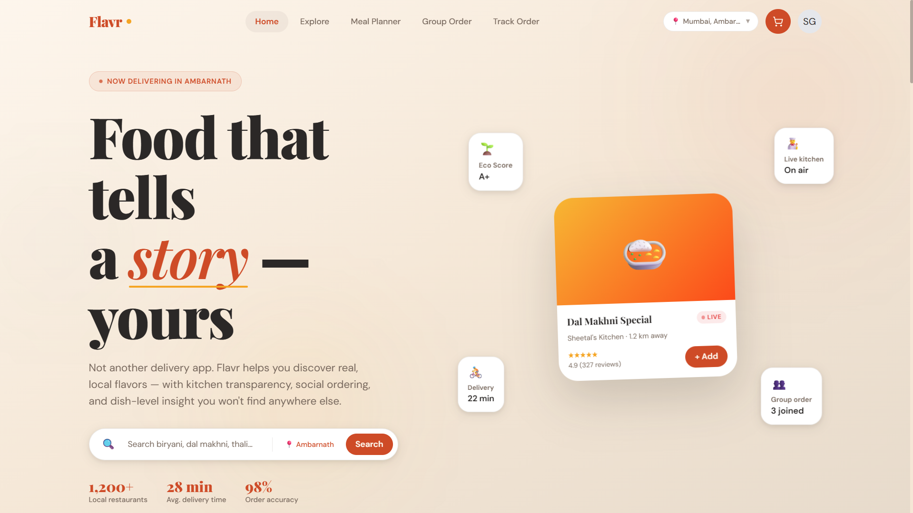
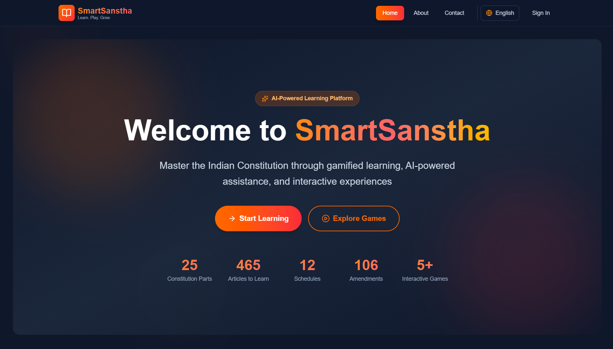
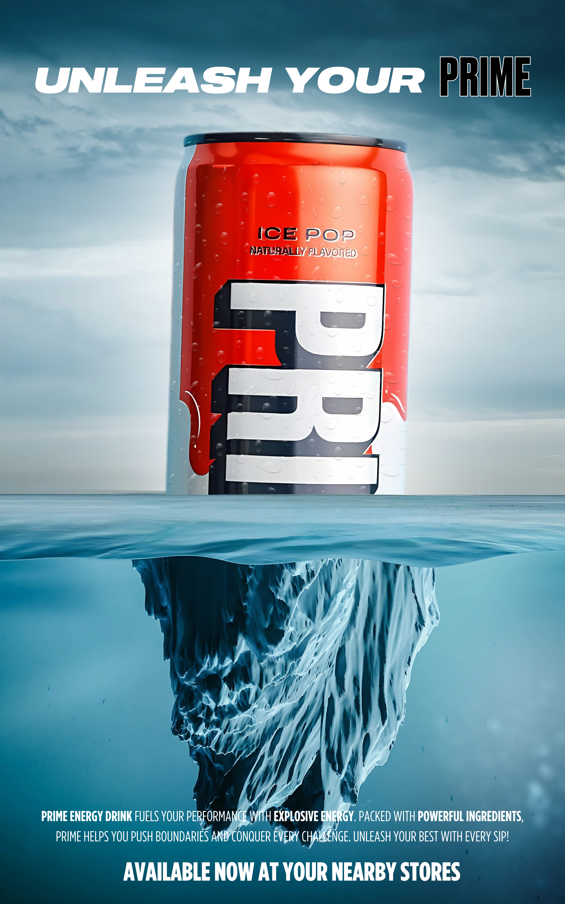
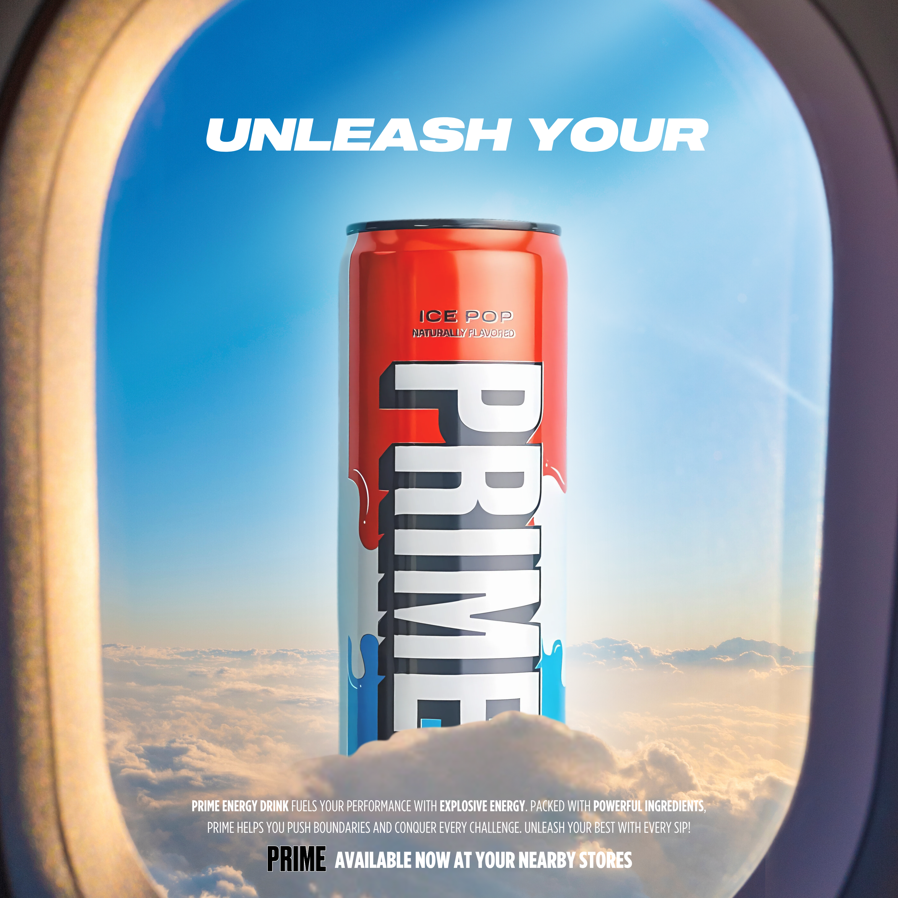
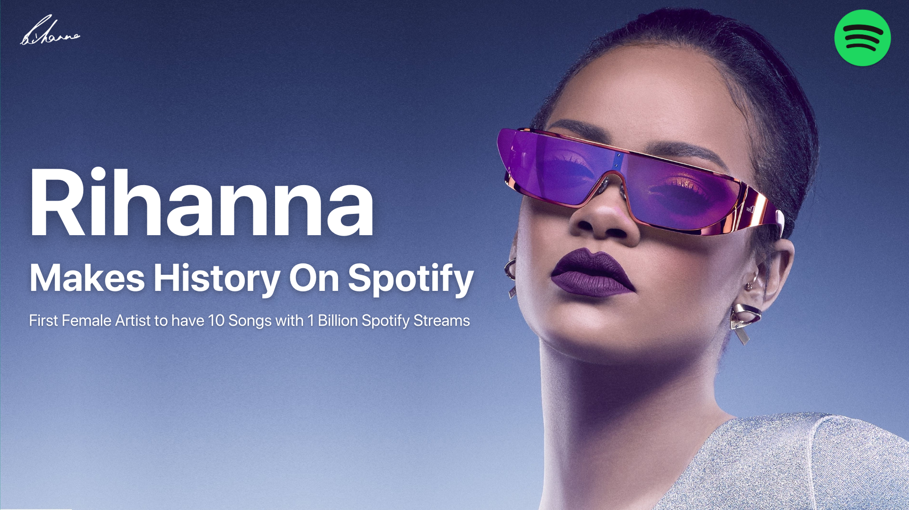
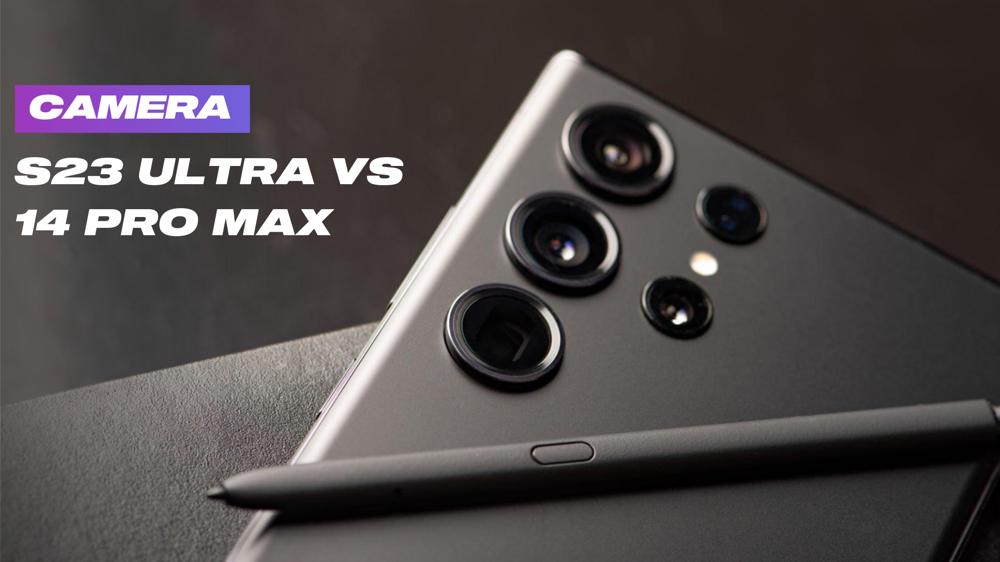
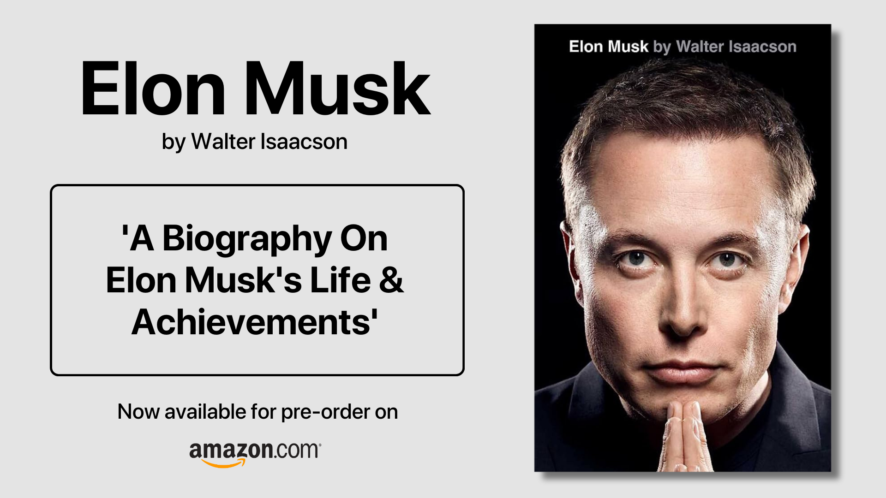

Click on any project to explore the full case study — from problem framing to design decisions and outcomes.

Live 01A next-generation food delivery experience that goes beyond Zomato & Swiggy — with unique social features, real-time kitchen transparency, and a hyperlocal discovery engine.

BE Major Project 02A gamified platform to make the Indian Constitution accessible and engaging — featuring constitutional quizzes, courtroom simulations, an AI chatbot, and adaptive learning modules.
Rethinking Spotify's mobile experience — introducing a light mode, improving feature discoverability, and making navigation more intuitive for everyday listeners.
A curated set of social media creatives, promotional posters, carousels, blog covers, and short-form video content — all designed in Canva for real brands and digital campaigns.





Client: Fitmaize — a female fitness influencer and dietician brand focused on healthy lifestyle content.
Designed and animated a short-form Instagram Reel in Canva to drive audience engagement and brand awareness. The reel uses branded colour palettes, motion text, and punchy messaging to capture attention in the first 3 seconds.
Tools: Canva Animate, Beat Sync, Magic Resize for Stories & Reels format.